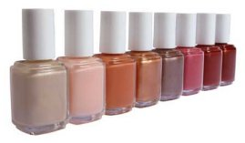
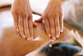

|  |
North East Nails07947 867470 or 0191 4833001 |
||
|---|---|---|---|
| Home Nails Treatments Price List Parties Weddings Bookings | |||
 MassagesMassages are a great way to relax. Choose a back & shoulder massage, a facial treatment or indulge yourself with a full body massage. We also offer Paraffin Wax massages for both hands and feet. If you suffer or have suffered with a skin condition, we recommend you consult your GP before undergoing any paraffin treatments. TanningEveryone loves a tan and the safest way to achieve a healthy golden tan is to fake it! We offer a range of tanning products in spray or cream to help you look and feel good. To help you get the best from your tan, which should last 4-7 days, we recommend the following;
WaxingWaxing is a great way to get rid of unwanted hair. We use NADS wax which unlike other waxes, is cold so there's no heating or burning your skin. The wax is a thick gel which melts with your body heat so it rinses off completely with water. NADS wax is also 100% natural. In fact it's so safe, you could eat it! When you shave or use creams that dissolve the hair on the surface your hair grows back fast and coarse. NADS removes even the hair's root so re growth is softer, finer and slower. Waxing works best when the hair is at least 3-5mm long. We ask that you advise us is you are taking any Glycolic Acid, Dermatological treatments or are Diabetic.
For HimPampering and looking after yourself is not just for women. Men deserve to treat themselves too. We offer a number of treatments especially for men. Choose a relaxing massage, a facial treatment or give your hands and feet a treat. |
|||